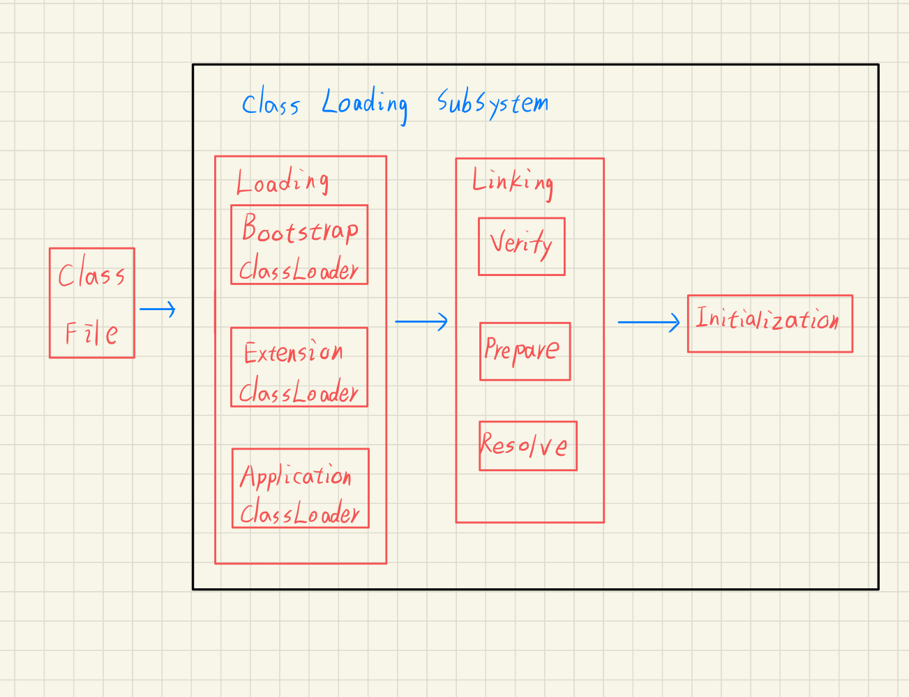
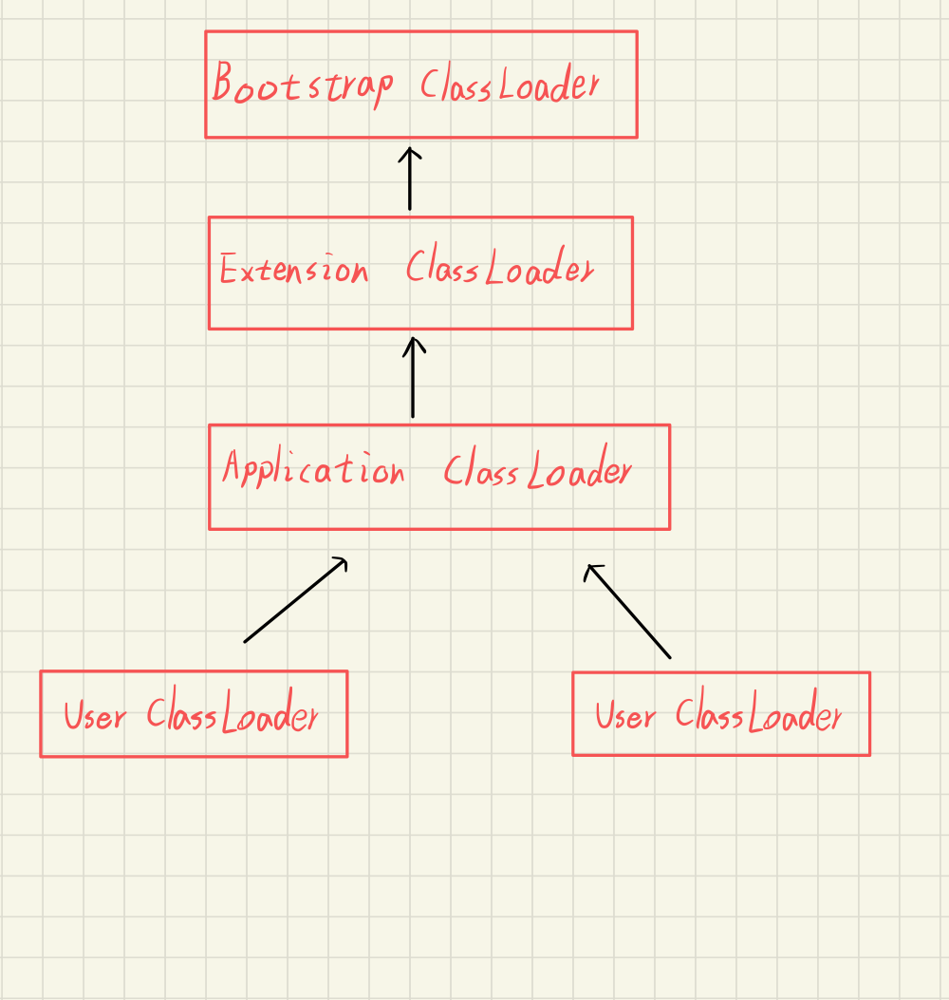
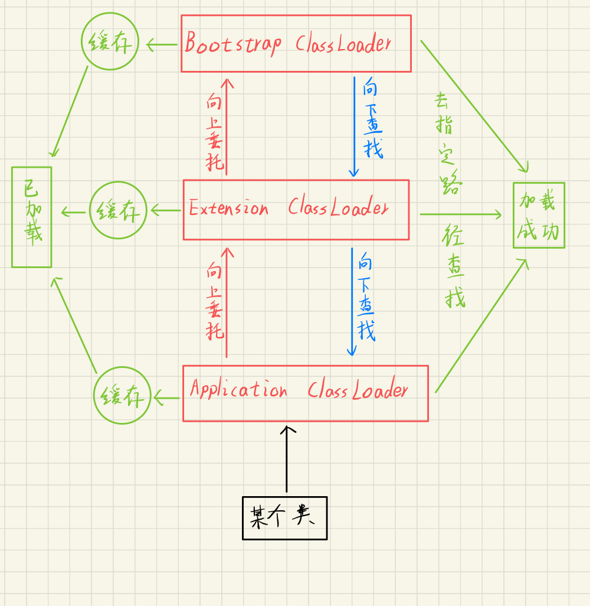

JVM-类加载子系统
概述
当编译完java程序后，如果你足够细心，会发现在某个特定的文件夹里总能发现以.class结尾的文件，也称之为字节码文件，而这正是用来储存中间代码的容器，这里面描述了类和接口的各种信息，只有当字节码文件加载到虚拟机后才能够运行和使用，这个过程由类加载子系统来完成，大致流程如下：

Loading-加载
这里的“加载”是“类加载”过程的一个阶段，在这个阶段，虚拟机需要完成下方三件事：
- 通过一个类的全限定名来获取定义此类的二进制字节流
- 将这个字节流所代表的静态存储结构转化为方法区的运行时数据结构
- 在内存中生成一个代表这个类的java.lang.Class对象，作为方法区这个类的各种数据的访问入口
Linking-连结
加载阶段与连接阶段的部分内容（如一部分字节码文件格式验证动作）是交叉进行的，加载阶段尚未完成，连接阶段可能已经开始，但这些夹在加载阶段之中进行的动作，仍旧属于连接阶段的内容，这两个阶段的开始时间仍然保持着固定的先后顺序。
Verify-验证
验证是连接阶段的第一步，这一阶段的目的是为了确保Class文件的字节流中包含的信息符合当前虚拟机的要求，并且不会危害虚拟机自身的安全。
验证阶段主要完成下面4个阶段的检验动作：
文件格式验证
第一阶段要检验字符流是否符合Class文件格式的规范，并且能被当前版本的虚拟机处理
元数据验证
第二阶段是对字节码表述的信息进行语义分析，以保证其描述的信息符合Java语言规范的要求
字节码验证
第三阶段是整个验证过程中最复杂的一个阶段，主要目的是通过数据流和控制流分析，确定程序语义是合法的、符合逻辑的。在第二阶段对元数据信息中的数据类型做完校验后，这个阶段对类的方法体进行校验分析，保证被校验类的方法在运行时不会做出危害虚拟机的安全事件
符号引用验证
最后一个阶段的验证发生在虚拟机将符号引用转换为直接引用的时候，这个转化动作将在连接的第三阶段——解析阶段中发生。符号引用验证可以看作是对类自身以外（常量池中的各种符号引用）的信息进行匹配性校验
常量池用于保存在编译期已确定的，已编译的class文件中的一份数据。它包括了关于类，方法，接口等中的常量，也包括字符串常量，如String s = "xiaohei"这种申明方式
Prepare-准备
准备阶段是正式为类变量分配内存并设置初始值的阶段，这些变量所使用的内存都将在方法区中进行分配。这个阶段中有两个容易产生混淆的概念需要强调一下，首先这时候进行内存分配的仅包括类变量(被static修饰的变量)，而不包括实例变量，实例变量将会在对象实例化时随着对象一起分配在Java堆中。其次，这里所说的初始值“通常情况”下是数据类型的零值，假设一个类变age的定义为:
1 | private static int age = 20; |
那变量age在准备阶段过后的初始值将会是0而不是20，因为这时候尚未开始执行任何Java方法，而把age赋值为20的putstatic指令是程序被编译后，存放在构造器< clint>()方法之中，所以这个赋值动作在初始化阶段才会执行。
当然还有一些特殊情况，如果类的字段属性为ConstantValue属性，那么在准备阶段变量value就会初始化为ConstantValue属性所指定的值，假设类变量value定义为：
1 | private static final int value = 123; |
编译时Javac将会为value生成ConstantValue属性，在准备阶段虚拟机根据这个属性的设置将value赋值为123
Resolve-解析
解析阶段是虚拟机将常量池内的符号引用替换为直接引用的过程，在Class文件中符号引用以CONSTANT_Class_info、CONSTANT_Fieldref_info、CONSTANT_Methodref_info等类型的常量出现。
符号引用(Symbolic References)：符号引用以一组符号来描述所引用的目标，符号可以是任何形式的字面量，只要使用时能无歧义地定位到目标即可。符号引用与虚拟机实现的内存布局无关，引用的目标并不一-定已经加载到内存中。各种虚拟机实现的内存布局可以各不相同，但是它们能接受的符号引用必须都是一致的， 因为符号引用的字面量形式明确定义在Java虚拟机规范的Class文件格式中。
直接引用(Direct References)：直接引用可以是直接指向目标的指针、相对偏移量或是一个能间接定位到目标的句柄。直接引用是和虚拟机实现的内存布局相关的，同一个符号引用在不同虚拟机实例上翻译出来的直接引用一般不会相同。如果有了直接引用，那引用的目标必定已经在内存中存在。
解析动作主要针对类或接口、字段、类方法、接口方法、方法类型、方法句柄和调用点限定符
Initialization-初始化
类初始化阶段是类加载过程的最后一步，前面的类加载过程中，除了在加载阶段用户应用程序可以通过自定义类加载器参与之外，其余动作完全由虚拟机主导和控制。到了初始化阶段，才真正开始执行类中定义的Java程序代码(或者说是字节码)。
在准备阶段，变量已经赋过一次系统要求的初始值，而在初始化阶段，则根据程序员通过程序制定的主观计划去初始化类变量和其他资源，或者可以从另外一个角度来表达:初始化阶段是执行类构造器< clinit>()方法的过程。
< clinit>()
< clinit>()方法是由编译器自动收集类中的所有类变量的赋值动作和静态语句块(static{}块)中的语句合并产生的，编译器收集的顺序是由语句在源文件中出现的顺序所决定的，静态语句块中只能访问到定义在静态语句块之前的变量，定义在它之后的变量，在前面的静态语句块可以赋值，但是不能访问。
1 | static { |
< clinit><()方法对于类或接口来说并不是必需的，如果-个类中没有静态语句块，也没有对变量的赋值操作，那么编译器可以不为这个类生成< clinit>()方法。
ClassLoader-类加载器
Java类加载体系
JVM预定义有三种类加载器，当一个 JVM启动的时候，Java开始使用如下三种类加载器：
- Bootstrap ClassLoader 启动类加载器
- Extension ClassLoader 扩展类加载器
- Application ClassLoader 应用程序类加载器
从Java虚拟机的角度来讲，只存在两种不同的类加载器:一种是启动类加载器( Bootstrap ClassLoader)，这个类加载器使用C++语言实现，是虚拟机自身的一部分;另一种就是所有其他的类加载器，这些类加载器都由Java语言实现，独立于虚拟机外部，并且全都继承自抽象类java.lang.ClassLader
启动类加载器(BootstrapClassLoader)：负责将
扩展类加载器(ExtClassLoader ,JDK 1.9 之后，改名为 PlatformClassLoader)：是由 Sun 的 ExtClassLoader（sun.misc.Launcher$ExtClassLoader）实现的。它负责将Java_Home /lib/ext或者由系统变量 java.ext.dir指定位置中的类库加载到内存中。开发者可以直接使用标准扩展类加载器
应用程序类加载器(AppClassLoader)：是由 Sun 的 AppClassLoader（sun.misc.Launcher$AppClassLoader）实现的。它负责将系统类路径（CLASSPATH）中指定的类库加载到内存中。开发者可以直接使用系统类加载器。由于这个类加载器是ClassLoader中的getSystemClassLoader()方法的返回值，因此一般称为系统（System）类加载器
在JDK16中，可以输入以下代码，查看以上这些类加载器的实现类：
1 |
|
结果：
1 | jdk.internal.loader.ClassLoaders$AppClassLoader@66d3c617 |
启动类加载器的结果为null是因为其使用了C++语言实现
加载器之间的关系——双亲委派模型
除了以上三种类加载器外，可能还存在由用户自定义的类加载器，他们之间的层次关系模型如下图所示

双亲委派模型的工作过程是如果一个类加载器收到了类加载的请求，它首先不会自己去尝试加载这个类，而是把这个请求委派给父类加载器去完成，每一个层次的类加载器都是如此，因此所有的加载请求最终都应该传送到顶层的启动类加载器中，启动类加载器先去缓存中查找，之后在去指定路径查找，只有当父加载器反馈自己无法完成这个加载请求（它的搜索范围中没有找到所需的类)时，子加载器才会尝试自己去加载，每一层的类加载器都会按照这种顺序进行类的加载，具体流程见下图：
